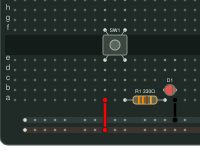
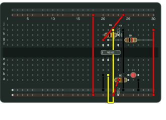
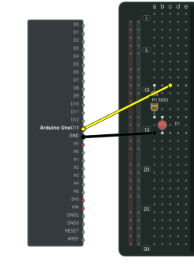
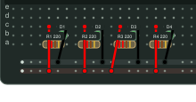
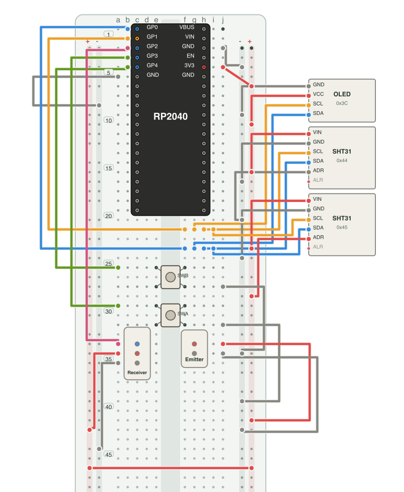

01 / Digital input
Button-controlled LED
A push button completes a path from the 5 V rail through a 330 Ω resistor and an LED to ground.
Parts: push button · resistor · LED · USB supply
View circuit sourceOpen diagramCircuit cookbook
Each recipe links to a complete Ruby circuit file and a diagram generated from it. Inspect the nets, then adapt the parts and hole positions to your own board.

01 / Digital input
A push button completes a path from the 5 V rail through a 330 Ω resistor and an LED to ground.
Parts: push button · resistor · LED · USB supply
View circuit sourceOpen diagram
02 / Timing
A timer IC, two timing resistors, and a capacitor form an astable oscillator. A separate resistor limits LED current; the other capacitors bypass supply and control pins.
Parts: NE555 · three resistors · three capacitors · LED
View circuit sourceOpen diagram
03 / Offboard module
D13 drives an LED through a current limiting resistor. The Uno remains outside the breadboard, where its physical board belongs.
Parts: Arduino Uno · resistor · LED
View circuit sourceOpen diagram
04 / Repeated circuit
A Ruby loop places four independent resistor and LED paths. The resolved nets keep each branch separate.
Parts: four resistors · four LEDs · USB supply
View circuit sourceOpen diagram
05 / Sensor system
A full-size board combines an RP2040 module, I²C display and sensors, input switches, and an infrared beam. Wire layers separate power, I²C, switches, and IR while sharing the same resolved circuit.
Parts: RP2040 · OLED · two SHT31 modules · two switches · IR receiver and emitter
Start with the user guide to learn the syntax, or edit a small powered circuit in the Playground.